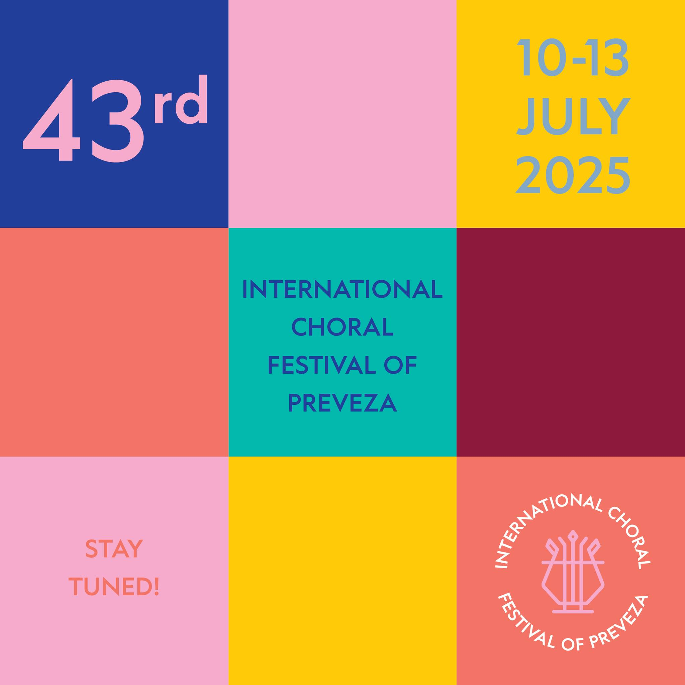

43ο Διεθνές Χορωδιακό Φεστιβάλ Πρέβεζας

Με ιδιαίτερη χαρά οργανώνουμε και φέτος το 43ο Διεθνές Χορωδιακό Φεστιβάλ Πρέβεζας. Το
φεστιβάλ προγραμματίζουμε να διαρκέσει από τις 10 έως τις 13 Ιουλίου 2025.
Φτάνοντας πλέον τα 43 χρόνια πραγματοποίησής του, το φεστιβάλ μας αισιοδοξεί να γίνει
πόλος έλξης χορωδιών από όλον τον κόσμο, χαρίζοντας σε όλους μας εμπειρίες υψηλού
χορωδιακού προϊόντος ανεβάζοντας συνεχώς τα στάνταρ του , κάνοντας μας κοινωνούς σε μια
μεγάλη ποικιλία διαπολιτισμικών εμπειριών με συμμετέχοντες από όλο τον κόσμο. Στη
διάρκεια του φεστιβάλ πραγματοποιούνται πολλές συναυλίες σε ειδυλλιακές τοποθεσίες της
περιοχής μας όπως η κεντρική παραλία της Πρέβεζας, διάφοροι ιεροί ναοί της πόλης καθώς
και το Ρωμαϊκό Ωδείο της Αρχαίας Νικόπολης.
Για τις χορωδίες που θα συμμετέχουν, το φεστιβάλ αποτελεί τόσο μια ευκαιρία για
συμμετοχή σε ένα μεγάλο πολιτιστικό γεγονός, ενώ παράλληλα υπάρχει αρκετός χρόνος για
ξεκούραση, επίσκεψη σε διάφορα μνημεία ιστορικού και φυσικού κάλλους απολαμβάνοντας τον
ήλιο, τη θάλασσα καθώς και την τοπική Πρεβεζάνικη γαστρονομία.
Το φεστιβάλ διοργανώνει η Χορωδία Πρέβεζας «Αρμονία» με ls την συμμετοχή και συνεργασία του Δήμου Πρέβεζας, της Περιφερειακής Ενότητας Πρέβεζας, του Υπουργείου Πολιτισμού, του ΕΟΤ, της Ιεράς Μητροπόλεως Νικοπόλεως και Πρέβεζας, της Εφορίας Αρχαιοτήτων Πρέβεζας και άλλων φορέων. Δικαίωμα συμμετοχής στο φεστιβάλ έχουν όλων των ειδών οι χορωδίες.
Θα είναι μεγάλη τιμή και χαρά για εμάς αν έρθετε στην όμορφη πόλη μας και λάβετε μέρος στον φεστιβάλ μας. Σας προσκαλούμε να ανακαλύψετε ότι η Πρέβεζα είναι μια γοητευτική και φιλόξενη πόλη γεμάτη ιστορικούς χώρους και τοποθεσίες φυσικής ομορφιάς και να ζήσετε τη μαγεία της χορωδιακής μουσικής.
Καταληκτική ημερομηνία παραλαβής των συμπληρωμένων αιτήσεων είναι η 1η Μαΐου 2025.


.JPG)